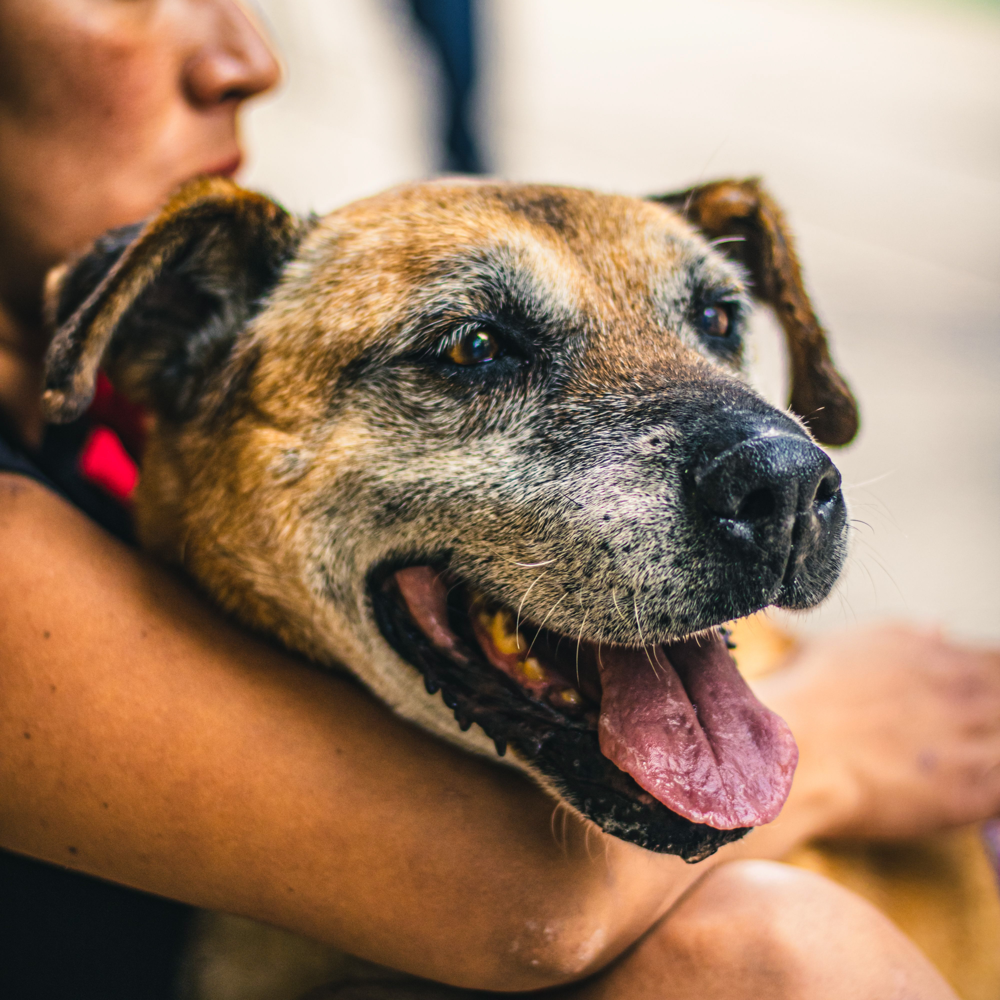

Senior Pet Adoption Foundation
Home
Adopt & Foster
Available Dogs
Available Cats
Contact
Other Websites
Hello, welcome to the Senior Pet Adoption Foundation. Our goal is to help animals that are less likely to be adopted fine their new forever homes.
Click below to view our available cats and dogs.
